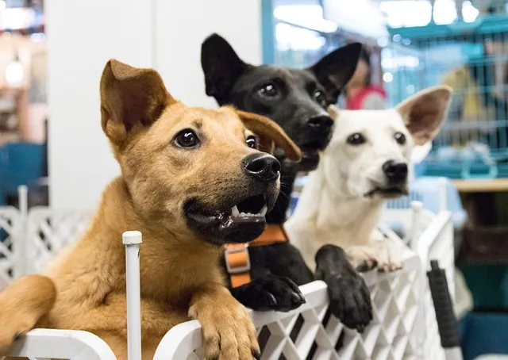

Tiempo
Pensá cuánto tiempo podés dedicarle a la mascota.
Revista Digital
SECCIÓN 04
Dar una segunda oportunidad también es transformar una vida.

ADOPTAR
Adoptar implica incorporar un animal a nuestra vida y asumir la responsabilidad de cuidarlo durante toda su vida.
Los refugios y organizaciones de rescate trabajan para brindar atención y encontrar hogares adecuados para animales que fueron abandonados o necesitan ayuda.
Pensá cuánto tiempo podés dedicarle a la mascota.
Evaluá si tu hogar es adecuado para el animal que querés adoptar.
Adoptar significa asumir una responsabilidad a largo plazo.
Detrás de cada adopción existe una historia. Animales que encontraron una familia y personas que decidieron abrirles las puertas de su hogar.